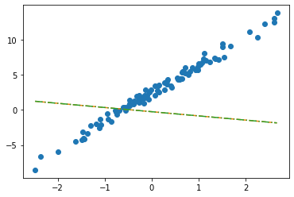

/home/hankang07/anaconda3/envs/py38/lib/python3.8/site-packages/tqdm/auto.py:22: TqdmWarning: IProgress not found. Please update jupyter and ipywidgets. See https://ipywidgets.readthedocs.io/en/stable/user_install.html
from .autonotebook import tqdm as notebook_tqdm회귀분석(2)– SSE와 MSE, step1의 다른버전 (torch.nn.Linear)
df = pd.read_csv("https://raw.githubusercontent.com/guebin/DL2022/main/posts/II.%20DNN/2022-09-22-regression.csv")
df| x | y | |
|---|---|---|
| 0 | -2.482113 | -8.542024 |
| 1 | -2.362146 | -6.576713 |
| 2 | -1.997295 | -5.949576 |
| 3 | -1.623936 | -4.479364 |
| 4 | -1.479192 | -4.251570 |
| ... | ... | ... |
| 95 | 2.244400 | 10.325987 |
| 96 | 2.393501 | 12.266493 |
| 97 | 2.605604 | 13.098280 |
| 98 | 2.605658 | 12.546793 |
| 99 | 2.663240 | 13.834002 |
100 rows × 2 columns
# torch.tensor(df.x,dtype=torch.float32).dtype # 메모리를 아끼기 위해 float32로 저장할 것임.
torch.tensor(df.x).float().dtype # 메소드로도 구현되어 있음.torch.float32tensor([[-5.],
[10.]], requires_grad=True)ver1: loss = sum of squares error
alpha = 1/1000
What = torch.tensor([[-5.0],[10.0]],requires_grad=True)
for epoc in range(30):
# step1: yhat
yhat = X@What
# step2: loss
loss = torch.sum((y-yhat)**2)
# step3: 미분
loss.backward()
# step4: update
What.data = What.data - alpha * What.grad # 가중치 업데이트 // # What.grad: 미분계수값 저장되어 있음.
What.grad = None # 가중치 초기화 (깨끗하게!)
- note: 왜 What = What - alpha*What.grad 는 안되는지?
ver2: loss = mean squared error = MSE
step1의 다른버전: torch.nn.Linear()
ver1: bias=True
net = torch.nn.Linear(1,1,bias=True)
\(X\)가 수식적이 변환을 거처서 \(\hat{y}\)라는게 나오게 될텐데 그것을 네트워크라고 정의한다.
X -> yhat
yhat = w0 + w1*x
net(x) = yhat ## 이런 구조로 만들 것임.w0 + w1*x같은 수식을 매번 안쳐도 됨!! \(\to\) 파이토치에서 구현이 되어있음!
- 초기 plot1 (네트워크로 만듦)
- 초기 plot2 (수식으로 만듦: yhat = w0+w1*x)
(Parameter containing:
tensor([-0.8470], requires_grad=True),
Parameter containing:
tensor([[-0.3467]], requires_grad=True))- 네트워크가 만들어질 때 net.bias, net.weight에 아무값이나 들어있음..
- net에서 \(\hat{w}_0, \hat{w}_1\) 의 값은?
- 수식표현: \(\hat{y}_i = \hat{w}_0 + \hat{w}_1 x_i = \hat{b} + \hat{w}x_i = -0.8470 + -0.3467 x_i\) for all \(i=1,2,\dots,100\).
ver2
- 입력이 x가 아닌 X를 넣고 싶다면? (보통 잘 안하긴 해요, 왜? bias=False로 주는게 귀찮거든요) - X는 바이어스가 고려된 상황
\(w_0 = -0.2451, \quad w_1 = -0.5989\)
plt.plot(x,y,'o')
plt.plot(x,net(X).data, '--')
plt.plot(x,X@torch.tensor([[-0.2451],[-0.5989]]), '-.')
- 수식표현: \(\hat{\bf y} = {\bf X} {\bf \hat W} = \begin{bmatrix} 1 & x_1 \\ 1 & x_2 \\ \dots & \dots \\ 1 & x_{100} \end{bmatrix} \begin{bmatrix} -0.2451 \\ -0.5989 \end{bmatrix}\)
잘못된사용1
tensor([-2.4821, -2.3621, -1.9973, -1.6239, -1.4792, -1.4635, -1.4509, -1.4435,
-1.3722, -1.3079, -1.1904, -1.1092, -1.1054, -1.0875, -0.9469, -0.9319,
-0.8643, -0.7858, -0.7549, -0.7421, -0.6948, -0.6103, -0.5830, -0.5621,
-0.5506, -0.5058, -0.4806, -0.4738, -0.4710, -0.4676, -0.3874, -0.3719,
-0.3688, -0.3159, -0.2775, -0.2772, -0.2734, -0.2721, -0.2668, -0.2155,
-0.2000, -0.1816, -0.1708, -0.1565, -0.1448, -0.1361, -0.1057, -0.0603,
-0.0559, -0.0214, 0.0655, 0.0684, 0.1195, 0.1420, 0.1521, 0.1568,
0.2646, 0.2656, 0.3157, 0.3220, 0.3461, 0.3984, 0.4190, 0.5443,
0.5579, 0.5913, 0.6148, 0.6469, 0.6469, 0.6523, 0.6674, 0.7059,
0.7141, 0.7822, 0.8154, 0.8668, 0.9291, 0.9804, 0.9853, 0.9941,
1.0376, 1.0393, 1.0697, 1.1024, 1.1126, 1.1532, 1.2289, 1.3403,
1.3494, 1.4279, 1.4994, 1.5031, 1.5437, 1.6789, 2.0832, 2.2444,
2.3935, 2.6056, 2.6057, 2.6632])잘못된사용2
이건 에러메세지는 안나지만 틀림.
plt.plot(x,y,'o')
plt.plot(x,net(X).data,'--')
plt.plot(x,X@torch.tensor([[-0.2451],[-0.5989]])+0.2549,'-.')- 수식표현: \(\hat{\bf y} = {\bf X} {\bf \hat W} + \hat{b}= \begin{bmatrix} 1 & x_1 \\ 1 & x_2 \\ \dots & \dots \\ 1 & x_{100} \end{bmatrix} \begin{bmatrix} -0.2451 \\ -0.5989 \end{bmatrix} + 0.2549\)
숙제
(1) 자신의 학번을 seed로 설정하고 표준정규분포에서 5개의 난수를 생성하고 순서대로 정렬한 뒤 이를 x로 저장하라. (아래코드참고)
(2) 아래와 같이 torch.nn.Linear()를 이용하여 적당한 네트워크를 생성하고 “최초의 직선” \(\hat{y}_i\)가 아래와 같이 구해지도록 net.weight 혹은 net.bias의 값을 수정하라.
\[ \hat{y}_i = 2.5 x_i - 7, \quad i=1,2,3,4,5 \]
단, \(x_1,x_2,\dots,x_5\)는 x의 원소이다.
note: 공부를 위해서 bias를 넣은 버전과 넣지 않는 버전 모두 계산해 보세요. (숙제제출은 한 방법으로만 구현해도 무방)
(풀이 시작)
ver1. bias=True
net1 = torch.nn.Linear(in_features=1, out_features=1,bias=True)
net1.weight.data, net1.bias.data # 네트워크에 들어있는 초기값.(tensor([[0.1441]]), tensor([-0.8133]))ver2. bias=False
(tensor([[-0.2855],
[-0.4631]]),
None)(tensor([[-6.8399],
[-6.2981],
[-6.2541],
[-5.9748],
[-5.7316]], grad_fn=<MmBackward0>),
tensor([[-6.8399],
[-6.2981],
[-6.2541],
[-5.9748],
[-5.7316]]))(모범답안)
(tensor([[-2.9777],
[-0.2220],
[-0.1181],
[ 0.1084],
[ 1.7688]]),
tensor([[ 1.0000, -2.9777],
[ 1.0000, -0.2220],
[ 1.0000, -0.1181],
[ 1.0000, 0.1084],
[ 1.0000, 1.7688]]))(ver1) bias를 넣음
(tensor([[0.0092]]), tensor([0.1899]))net1.weight.data = torch.tensor([[2.5]])
net1.bias.data = torch.tensor([-7.0])
net1.weight.data, net1.bias.data(tensor([[2.5000]]), tensor([-7.]))(tensor([[-14.4443],
[ -7.5551],
[ -7.2952],
[ -6.7290],
[ -2.5781]], grad_fn=<AddmmBackward0>),
tensor([[-14.4443],
[ -7.5551],
[ -7.2952],
[ -6.7290],
[ -2.5781]]))(ver2) bias를 넣지 않음
(tensor([[-0.6152, -0.6372]]), None)